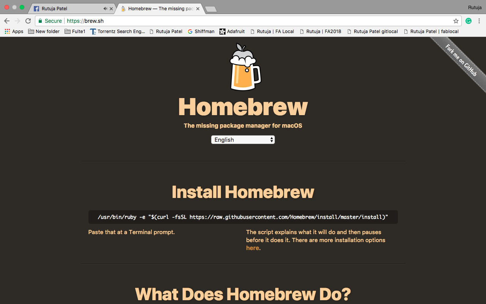
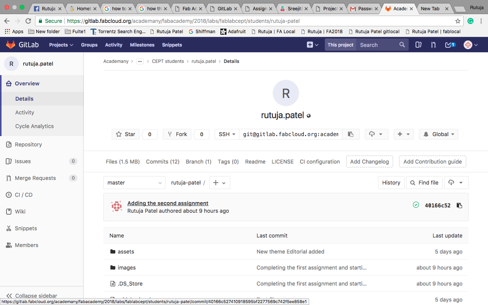
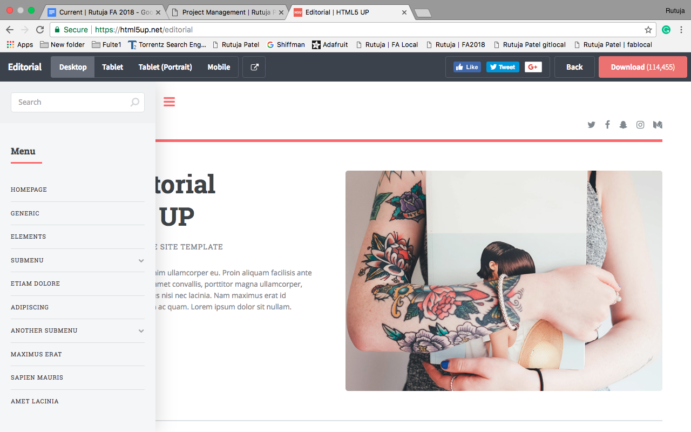
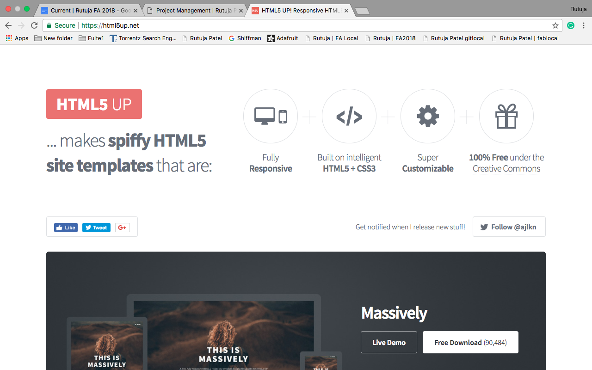

Week 2 | Project Management | Jan 24
Installing HOMEBREW on the mac
For using git on mac you need to install Homebrew. Homebrew simplifies the installation process for mac and a software mangement system. OSX does not have much pre-installed software so you can install it by Homebrew.
Open a terminal on mac by - Spotlight Search>>Terminal. ( Command + Spacebar )
Now The terminal is open and you can work on it by writing commands.
You need to first download Xcode on your mac for using Homebrew. Go to Apple App Store and download Xcode from there.
You can install HOMEBREW from here

- Copy the URL that you can see in the picture and paste into the Mac OS terminal and press enter.
- It will ask to enter your administrative password and entering that you will complete the process of installing
- Now by typing brew, you will find the command line options.
- To install git you need to type “ $ brew install git” and you can continue using git
Starting with gitlab
First of all, I logged into gitlab at

Now open the terminal in mac and start with the following programs
$ git config -- global user.name "your name"
$ git config -- global user.email "your email"
These commands allow you to operate the account that you configure.
Now in order to make changes in the repo we need to clone the following URL. This can be done by the following command-
$ git clone git@gitlab.fabcloud.org:academany/fabacademy/2018/labs/fablabcept/students/rutuja-patel.git
This command is used to point out the repository that we are using and we can make changes in it. This is an act of pointing your git repository and cloning/downloading to your computer.
Now a folder was created in my PC of my repo name.
Making a html file into in with the help of Sublime Text. (Sublime Text is a text editor for editing code, programming, scripting and markup languages. This is one of the best platform for editing the html code.)
Now pushing it to gitlab
You need to follow the commands given below
- git status : This command checks if any file is added to the folder and the changes made in the files
- git add -A : This command adds the changes made in the folder
- git commit -m “message” : This command commits the changes made in the files. You can write the changes made in the double inverted commas. Here -m represents message - a message you use in double inverted commas.
- git push : This command pushes all the the changes made in the file.
Start making a Portfolio
I am using HTML for making website. I have learned html form w3school.
I used the following steps for making my own website
- I have downloaded html Editorial Theme from html5up.
- You can download it from https://html5up.net/ or can choose any other template from it. Many templates are also available from https://www.w3schools.com/w3css/w3css_templates.asp which are w3school templates.
- Now add all the files to git repository on your local computer.
- For editting the html website, we need an editting software where we can change the content and add new stuffs. I am using Sulime Text edittor. This editor is basically made for python programmers and html code can also be editted using this.
- You can download the sublime text from here
- Go to the terminal and go for the following commands
- git status : This will show all the files which you have not pushed to git and also the files which you have edited. The name of file will be in red colour which means that the file are changed and not added to git.
- git add -A : This command will add all the changed files.
- Now if you again write git status then you will find that ,all the files appear in green colour which means all the files are added.
- git commit -m “message” : This command will commit the changes made in the files.
- git push : This command will push all the changes online into the git repository.


Edit the code

Html coding
I refered w3schools for the html tutorial. I found html easy and it was fun learning it. Now open the files in sublime text editor and startb editing the code. After completion of the editting it now you will be able to push the website online.The tutorial I refered for learning html with sublime.
Now my website is ready :p